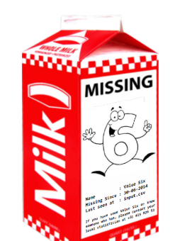
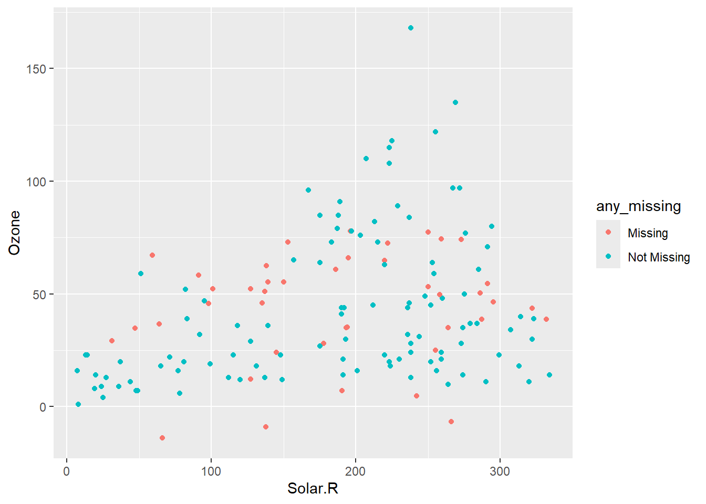

library(simputation)
library(tidyverse)
library(datasets)
library(naniar)
library(gt)
Introduction
Dans le monde de l’analyse de données, l’imputation est une étape cruciale pour gérer les valeurs manquantes. Le package Simputation de R offre une solution puissante et flexible pour imputer les données manquantes de manière simple et efficace. Dans cet article, nous allons explorer les fonctionnalités de ce package, comprendre son utilité, et voir des exemples concrets d’application.
Qu’est-ce que le Package Simputation ?
Simputation est un package R conçu pour faciliter l’imputation des données manquantes. Il propose une interface unifiée pour plusieurs méthodes d’imputation, permettant aux utilisateurs de choisir la méthode la plus adaptée à leurs besoins. Que vous travailliez avec des données numériques, catégorielles, ou même des données complexes, Simputation offre des outils pour gérer ces situations.
Pourquoi Utiliser Simputation ?
Flexibilité : Supporte une variété de méthodes d’imputation, y compris la régression, la moyenne, la médiane, et bien d’autres.
Simplicité : Une syntaxe intuitive qui permet de réaliser des imputations en quelques lignes de code.
Intégration : Fonctionne parfaitement avec les autres packages du tidyverse, ce qui facilite son intégration dans vos workflows existants.
Installation
Pour installer Simputation, utilisez la commande suivante :
install.packages("simputation")Exemples d’Application
- Chargement des librairies
Le package Simputation propose plusieurs méthodes d’imputation pour gérer les valeurs manquantes. Chaque méthode est basée sur un modèle statistique ou une approche algorithmique spécifique
Conseil : Lorsque vous développez des modèles d’imputation, il est judicieux d’essayer quelques modèles différents pour voir comment les valeurs imputées évoluent en fonction de vos hypothèses. Dans cette partie, nous allons imputer des données à l’aide de la régression linéaire.
données Airquality
airquality %>%
slice_head(n = 6) %>%
gt()| Ozone | Solar.R | Wind | Temp | Month | Day |
|---|---|---|---|---|---|
| 41 | 190 | 7.4 | 67 | 5 | 1 |
| 36 | 118 | 8.0 | 72 | 5 | 2 |
| 12 | 149 | 12.6 | 74 | 5 | 3 |
| 18 | 313 | 11.5 | 62 | 5 | 4 |
| NA | NA | 14.3 | 56 | 5 | 5 |
| 28 | NA | 14.9 | 66 | 5 | 6 |
Utilisation de simpite_lm()
- Description :
Pour utiliser impute_lm(), nous spécifions la variable sur laquelle nous souhaitons imputer comme y variable dépendante ou, comme vous le feriez avec un modèle linéaire. Sur le côté droit de la formule se trouvent les variables que nous souhaitons utiliser pour former les imputations (X). Cela renvoie un bloc de données avec des valeurs imputées dans y
- Cas pratique
Nous allons imputer les valeurs de la variable Solar.R utilisant les variables Wind, Temp, et Month, et enchaîner une autre étape d’imputation dans pour imputer la variable Ozone avec les mêmes variables.
airquality_lm_impute <- airquality %>%
nabular() %>%
add_label_shadow() %>%
as.data.frame() %>%
impute_lm(Solar.R ~ Wind + Temp + Month) %>%
impute_lm(Ozone ~ Wind + Temp + Month) %>%
as_tibble()
airquality_lm_impute# A tibble: 153 × 13
Ozone Solar.R Wind Temp Month Day Ozone_NA Solar.R_NA Wind_NA Temp_NA
<dbl> <dbl> <dbl> <int> <int> <int> <fct> <fct> <fct> <fct>
1 41 190 7.4 67 5 1 !NA !NA !NA !NA
2 36 118 8 72 5 2 !NA !NA !NA !NA
3 12 149 12.6 74 5 3 !NA !NA !NA !NA
4 18 313 11.5 62 5 4 !NA !NA !NA !NA
5 -9.04 138. 14.3 56 5 5 NA NA !NA !NA
6 28 178. 14.9 66 5 6 !NA NA !NA !NA
7 23 299 8.6 65 5 7 !NA !NA !NA !NA
8 19 99 13.8 59 5 8 !NA !NA !NA !NA
9 8 19 20.1 61 5 9 !NA !NA !NA !NA
10 35.2 194 8.6 69 5 10 NA !NA !NA !NA
# ℹ 143 more rows
# ℹ 3 more variables: Month_NA <fct>, Day_NA <fct>, any_missing <chr>Explication :
Transformation le jeu de données en format nabular et add_label_shadow() pour identifier les valeurs manquantes en ajoutant une colonne any_missing pour indiquer les lignes avec des valeurs manquantes.
Convertir en data.frame pour assurer la compatibilité.
Convertir le résultat en tibble pour une manipulation facile.
Nous pouvons utiliser ggplot pour afficher les valeurs imputées, en définissant colour = any_missingun ggplot.
ggplot(airquality_lm_impute,
aes(x = Solar.R,
y = Ozone,
colour = any_missing)) +
geom_point()
1. Comment fonctionne l’imputation à l’aide d’un modèle linéaire
L’imputation par la moyenne est généralement d’une mauvaise méthode d’imputation, car elle augmente artificiellement la moyenne et réduit la variance, ce qui ne permet pas de capturer la variation naturelle des données. Utiliser un modèle linéaire pour imputer les données prendre en compte certaines caractéristiques des données, afin de mieux prédire les valeurs manquantes.
Pour imputer des valeurs à l’aide d’un modèle linéaire, nous utilisons
impute_lmsoit la donnée
airquality